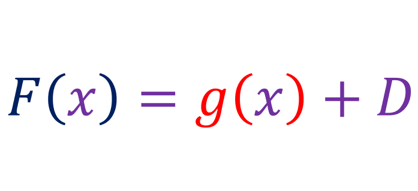
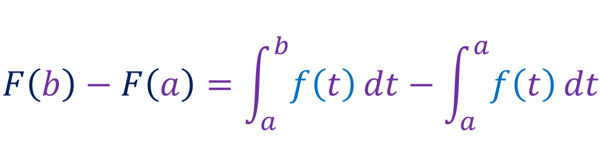

Lets say the function f is continous on [a, b], and lets say function g is defined by:
The variable x varies between a and b. Since g'(x) = f(x). We can say the g(x) is the antiderivative of f(x). When we get an antiderivative of a function, there appears an arbitrary constant. For example, the antiderivative of [x2] is [(x3/3) + C], where is an arbitrary constant. Is there a way to figure out this constant? In this case, with g(x), it is, you just have find g(a), because g(a) = 0, and we can use that to find the value of C. For example if f(x) = [x2], and if a = 6, then g(6) = [(63/3) + C], this means that [C = -72]. Now lets define F(x) to be any antiderivative of f(x), as in F(x) is like g(x), but where the arbitrary constant is unknown, we can represent F(x) as:
Where D is unknown. Now lets evaluate F(b) - F(a):
If we expand g:
Since g(a) = 0:
This is the fundamental theorem of calculus, part 2.